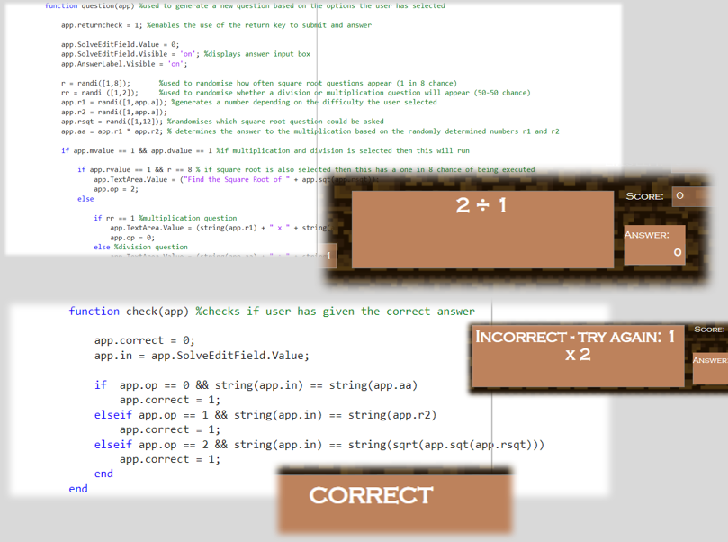

Temple Quest Educational Game
View Project Presentation here
This game was created in MATLAB for my individual submission for the Systems and Software Module that was part of my degree. The aim of this game was to provide a fun and entertaining way to help primary school children (Ages 7-11) learn and practice times tables. It has different options when you start to select a difficulty level - the difficulty of the timetables can be altered as well as how many lives you start with and the option to test, multiplication, division and square roots. This allows the game to appeal to wider age range
The game is a 2D side-scroller style game in which the user must use the left and right arrow keys to navigate the temple. Each level has a shrine/puzzle which can be activated by pressing ‘E’ when standing near it. Upon doing this, a maths question will appear and the user has to input the correct answer to progress to the next level and their score will be increased accordingly, depending on the type of question. If they get the question wrong, a message will be displayed and they will be asked to try again – however they will lose a life. If the user gives the correct answer then the shrine will ‘break’ and the door will open allowing them to progress to the next level.
I have attached a presentation which goes into the game in more detail and displays the source code.
